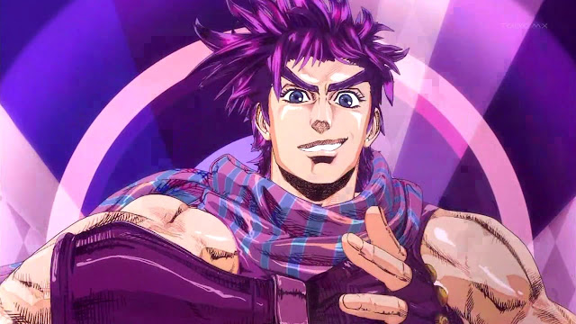
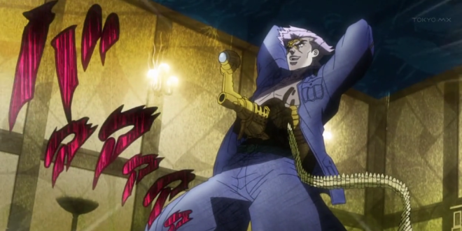

JoJo's Bizarre Adventure
Battle Tendency (戦闘潮流 Sentō Chōryū) é o segundo arco de história de JoJo's Bizarre Adventure, serializado na Weekly Shōnen Jump de novembro de 1987 a março de 1989. O arco é precedido por Phantom Blood e teve um total de 69 capítulos.
Resumo
Na história de fundo da série, 102,000 anos atrás num lugar que seria o México atual, começou com uma raça misteriosa mas poderosa com expectativas de vida incrivelmente longas e com a habilidade de absorver forças vitais de plantas e animais, embora eles tivessem a desvantagem de serem facilmente desintegrados se expostos à luz do sol e por isso viviam abaixo do chão. Kars, um humanóide morador do subsolo conhecido como Homem do Pilar, criou uma máscara de pedra que concede imortalidade absorvendo energia vital para conquistar o sol (que mata a sua espécie). Ele matou todos, menos 4 das tribo. Como os corpos dos Homens do Pilar já eram imortais, ele precisavam de mais poder para se tornarem em seres supremos. Em 39 DC, três dos Homens do Pilar, Kars, Wamuu, e Esidisi, vieram para o Império Romano para encontrar uma Pedra Vermelha perfeitamente cortada conhecida como a Pedra Vermelha de Aja. Kars, Wamuu, e Esidisi desenvolveram estilos de luta para combater Hamon, uma energia com as mesmas propriedades da energia solar, e quase dizimando a tribo Hamon, mas a pedra escapou-lhes por pouco. Depois disto, os Homens do Pilar entraram num sono de 2,000 anos.
Em 1889, o marido de Erina Joestar, Jonathan, foi morto por Dio Brando num navio no Oceano Atlântico. Erina sobreviveu e salvou a vida de uma bebé, cujo pais foram mortos pela máscara de pedra. A menina, Elizabeth, foi criada pelo mestre de Hamon, Straizo, que a ensinou a usar Hamon e lhe deu a Pedra Vermelha de Aja. Elizabeth casou-se com o filho de Erina, George, e tiveram um filho chamado Joseph. Quando Joseph era um bebê, George foi morto por um zumbi que se misturou como um comandante do Real Corpo Aéreo e a sua morte foi encoberta. Após matar o zumbi num ato de vingança, um mandato para a prisão para Elizabeth foi emitido. Ela escondeu-se e adotou o pseudônimo Lisa Lisa. Joseph foi criado por Erina. Ele herdou as habilidades Hamon de Jonathan.
No começo da série, no outono de 1938, quando a II Guerra Mundial estava iminente, Joseph e Erina mudam-se de Londres para Nova Iorque. Enquanto isso, o antigo bandido virado barão de petróleo Robert E. O. Speedwagon convida Straizo ao México para destruir um Homem do Pilar com Hamon. Em vez disso, Straizo fere Speedwagon, e usa uma máscara perto do Homem do Pilar e o sangue de Speedwagon para se tornar num vampiro imortal. Straizo vai a Nova Iorque para destruir Joseph e Erina, acreditando serem as últimas pessoas a saber da máscara de pedra. Quando Joseph derrota Straizo, Straizo conta-lhe que o Homem do Pilar está prestes a despertar e ele irá conhecê-lo em breve. Straizo então comete suicídio, canalizando Hamon por si, destruindo o seu corpo de vampiro. Intrigado, Joseph vai ao México e é informado de que Speedwagon foi detido pelos Nazis, que também têm a ambição de estudar os Homens do Pilar para servir a conquista mundial de Adolf Hitler. Joseph salva Speedwagon, que sobreviveu, do Homem do Pilar despertado chamado Santana, e com a ajuda de Rudol von Stroheim, o Major Nazi ferido por Santana, levando Santana a tornar-se em pedra pela luz solar refletida de um poço.
Joseph e Speedwagon viajam para Roma, onde conhecem Caesar Anthonio Zeppeli, um homem que treinou em Hamon para continuar o legado do seu pai Mario e do seu avô Will. No entanto, o grupo chega demasiado tarde para parar Kars, Wamuu, e Esidisi de despertarem. Joseph joga com o orgulho de Wamuu e convence-o a o deixar viver para ser um oponente mais digno. Tanto Wamuu como Esidisi implantam anéis com veneno na sua aorta e traqueia, dando a Joseph 33 dias para arranjar o antídoto de cada um deles.
Joseph e Caesar treinam em Hamon sob Lisa Lisa na Ilha Air Suplena na costa de Veneza. Esidisi ataca a ilha e é desafiado por Joseph. Joseph destrói o corpo de Esidisi e leva o seu antídoto, mas o cérebro de Esidisi é capaz de possuir Suzi Q para roubar a Pedra Vermelha e mandá-lo a Kars e Wamuu. Joseph e Caesar trabalham juntos para limpar a influência de Esidisi em Suzi Q e destroem-no. O grupo localiza Kars e Wamuu na Suíça. Caesar morre a lutar com Wamuu, e fica com o antídoto para Joseph antes de morrer. Joseph e Lisa Lisa então confrontam Kars e Wamuu pela Pedra Vermelha, Lisa Lisa mente e diz ter um explosivo temporizado que irá destruir a pedra. Joseph mata Wamuu em batalha.
A 28 de fevereiro de 1939, Kars adquire a Pedra Vermelha e usa-a com a máscara de pedra para se tornar no ser supremo, apesar de esforços de Joseph e do seu novo aliado von Stroheim para o parar. Agora imune ao sol e capaz de usar Hamon, o único desejo de Kars é matar Joseph. Joseph rouba um avião Nazi e tenta despistar-se e a Kars na ilha vulcânica de Vulcano. Joseph e Kars escapam, mas o choque do acidente do avião causa uma erupção vulcânica. Kars tenta matar Joseph com Hamon mas Joseph instintivamente segura a Pedra de Rubi, fazendo com que a energia provocasse um clímax da erupção, enviando Joseph e Kars a voar para o céu numa grande pedra. Kars é arremessado para o espaço por restos vulcânicos. Ele tenta voltar à Terra, mas o seu corpo congela e torna-se em pedra. Incapaz de morrer mesmo que o queira desesperadamente, ele deriva pelo espaço eternamente, eventualmente parando de pensar. Voltando à terra, Joseph é cuidado pela assistente de Lisa Lisa, Suzi Q, com quem ele casa. No epílogo, passado em 1987, um Joseph envelhecido apanha um voo do Aeroporto Internacional John F. Kennedy para o Japão, onde a sua filha e neto vivem, diretamente levando aos primeiros capítulos do arco de história seguinte, Stardust Crusaders.